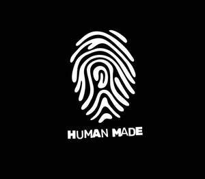

Trade Mark Journal No.2025/031 1 August 2025
UK00004237071 18 July 2025 (35,41)

- Class 35
- Production of advertising material; Production of advertising films; Production of advertising materials; Production and distribution of radio and television commercials; Production of cinema commercials; Production of commercials; Production of advertising matter; Production of television commercials; Production of radio commercials; Production of television and radio advertisements; Compilation, production and dissemination of advertising matter; Production of advertising matter and commercials; Production of sound recordings for marketing purposes; Advertising and publicity; Television advertising; Promotional and advertising services; Newspaper advertising; Outdoor advertising; Cinema advertising; Advertising services provided by a radio and television advertising agency; Advertising agency services; Design of advertising logos; Post-production editing of advertising or commercials; Advertising services to promote the sale of beverages; Advertising for motion picture films.
- Class 41
- Television production; Film production services; Film production; Services for the production of entertainment in the form of film; Production of entertainment in the form of television programmes; Film production for entertainment purposes; Television, radio and film production; Production of television entertainment programmes; Services for the production of entertainment in the form of video; Consultancy on film and music production; Film production, other than advertising films; Production of videos; Production of television films; Production of animation; Production of television features; Production of films; Production of entertainment in the form of a television series; Television programme production; Animation production services; Television program production; Production of musical videos; Production of theatrical shows; Production of films in studios; Television show production; Television and radio programme preparation and production; Production of sporting events for television; Production of music shows; Production of television and cinema films; Production of television game shows; Production of films for entertainment purposes; Production of talent shows; Production of video films; Video production; Production of cinema films; Production of motion picture films; Production of documentaries; Production of animated cine-film clips; Motion picture film production; Motion picture production; Production of films, other than advertising films.
The Human Made Mark Ltd